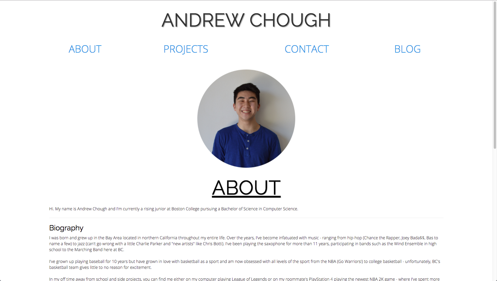

Day 1: An Overview and the Start
August 10th, 2017
Today is August 10th, only one more day until the weekend!!! A few months ago, I created this website to show to people who wished to see a little bit more about myself. From my parents to employers and recruiters that I may never get the chance to meet, this website provides a more personal side of myself from a developing and coding perspective. Once I got through all the pesky website hosting and domain creating process (which took me a lot longer than I thought), I published my portfolio on the web, added my website to my resume, and my goal of creating a personal portfolio/website was finally finished. Though I created this website within a few quick days, once I published it on the Internet, I just left it as is and never really came back to updating it as I went through my year.
I've come back to it because well... it seems like a waste to just have a not-updated website with just your past accomplishments. Not only this, but I want to document my progress as an individual, as a student studying Computer Science, and as a developer. I've learned a lot from studying Computer Science at Boston College, having taken about six CS courses through four semesters and learning languages such as Python, Java, C, and OCaml (thanks Professor Muller) along the way.
But for me, progress was only halfway there through classes. I've had the opportunity and privilege to participate in side-projects and hackathons with some close friends, both here and in college. This is where I've derived most of my determination to improve as a Computer Scientist/devloper, and gained a lot of admiration for my peers around me.
This is where the 100 Days of Coding (and Designing) comes into play. I constantly want to push myself to be the best I can be and hopefully with persistence, I'll be able to pull that off. This upcoming year is a pretty big one in terms of education and career path. Holding myself to a standard that requires me to constantly push myself is what I envision going into this important year. So here it is: day one of the Hundred Days of Coding.
A couple of weekends ago I was fortunate enough to attend the 10th Annual AngelHack Silicon Valley, located at Draper University in San Mateo. I attended this hackathon with some friends, all of which go to University of California: Berkeley - which prides itself in having one of the best Computer Science departments not only in the state of California, but across the country. Needless to say, watching my team around me work relentlessly for twenty-five hours straight was inspiring (shoutout to one of my team members that drank seven Red Bulls + a coffee with no sleep). It also gave me a renewed focus as to what I want to work on looking forward and what languages/concepts I'd like to learn. The first task I've set for myself is to work on revamping my portfolio website as I know that a lot more time and effort could be put in to make the site itself look cleaner, more crisp, and much more appealing.
Getting into it, this is the new redesign of my website! Before, my website used to look like this: 
So clearly, the updated version is an improvement of what it used to be. And hopefully so - I definitely felt like I put into a lot more time to make sure that the new version of the website is the best that I could make it. In my eyes, there's still improvements to be made: including color scheme, loading time, and adding certain features like a page load but at the moment, I am pretty happy with how everything turned out. It definitely was a good learning experience to have complete autonomy in how I wanted something to look and then going out and doing it. Looking forward to continue working tomorrow. Cheers!